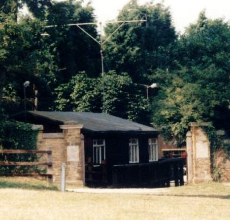

Northampton Scout Amateur Radio Group

GB4NDS

View Calendarto see Meeting dates and other group activities


Radio Scouting is a unique combination of amateur radio with the Scouting programme. Scouts study radio communication and electronics among other things and can earn a number of badges like the Communicator Activity Badge.

Location: IO92NG, WAB Square SP76